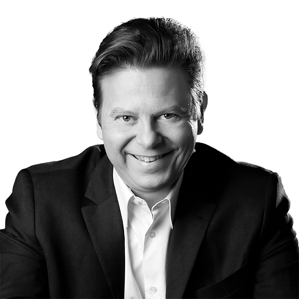
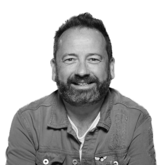

Equipo de Operación Triunfo
Desde los presentadores hasta los profesores de la academia, aquí encontrarás una descripción detallada de todas las personas que han formado parte del programa a lo largo de las diferentes ediciones.
Descubre quiénes han sido los presentadores más emblemáticos, los miembros del jurado, los profesionales detrás de cámaras, y más. Este equipo, junto con los talentosos concursantes, ha contribuido a hacer de Operación Triunfo uno de los programas de televisión más queridos y exitosos de la historia.
Presentadores
- Carlos Lozano (2001-2004)
- Jesús Vázquez (2005-2009)
- Pilar Rubio (2011)
- Roberto Leal (2017-2020)
- Chenoa (2023)
Jurado
- Pilar Tabares
- Narcís Rebollo
- Alejandro Abad
- Pilar Zamora
- Daniel Aragay
- José Luis Uribarri
- Inma Serrano
- Augusto Algueró Jr.
- Noemí Galera
- Javier Llano
- Greta
- Risto Mejide
- Coco Comín
- Ramoncín
- Eva Perales
- Mónica Naranjo
- Manuel Martos
- Joe Pérez-Orive
- Ana Torroja
- Javier Portugués "Portu"
- Natalia Jiménez
- Nina Agustí
- Concha Buika
- Cristina Regatero
- Pablo Rouss
Presentador del Chat / Posgala
- Nina
- Àngel Llàcer
- Àlex Casademunt
- Noemí Galera
- Ricky Merino
- Masi Rodríguez
Presentador de los resúmenes / OT al día
- Jennifer Rope
- Ainhoa Arbizu
- Xuso Jones
Director
- Tinet Rubira
- Adán Bonet
- Nia Sanjuán
Subdirectora
- Verónica Pareja
- Mercedes Garro
Productores ejecutivos
- Toni Cruz
- Josep Maria Mainat
- Tinet Rubira
- Jordi Rosell
- Verónica Pareja
Director de casting
- Noemí Galera
Claustro de profesores
- Noemí Galera, Directora de la academia (OT 9 - presente)
- Manu Guix, profesor de canto (OT 1 - presente); director vocal (OT 6 - OT 8);
director musical (OT 9 - presente); subdirector de la academia (OT 9 - presente) - Mamen Márquez, directora vocal y profesora de técnica vocal (OT 9 - presente)
- Gerard Ibáñez, profesor de canto coral (OT 12 - presente)
- Pablo Lluch, preparador vocal (OT 12 - presente)
- Vic Mirallas, preparador vocal (OT 12 - presente)
- Vicky Gómez, coreógrafa (OT 9 - presente)
- Abril Zamora, profesora de interpretación (OT 12 - presente)
- Toni Hinojosa, profesor de fitness (OT 12 - presente)
- Judith Endje, profesora de baile urbano (OT 12 - presente)
- Jill Earnshaw, profesora de inglés (OT 12 - presente)
- Verónica Blume, profesora de yoga (OT 12 - presente)
- Bruno Berthuit (King Bru), profesor de francés (gala 6) (OT 12 - presente)
Antiguos directores:
- Nina Agustí, directora (OT 1 - OT 3, y OT 8)
- Mikel Herzog, director de la "post-academia" (OT 2)
- Kike Santander, director (OT 4, OT 5)
- Edith Salazar, directora adjunta (OT 4, OT 5)
- Àngel Llàcer, director (OT 6, OT 7)
- Daniel Anglès, subdirector (OT 8)
El equipo de creadores y productores detrás del icónico programa " Operación Triunfo" ha dejado una huella imborrable en la historia de la televisión española. Con palabras de Toni Cruz, Josep Maria Mainat y otros miembros clave del equipo, podemos comprender mejor la pasión y dedicación que llevaron al éxito este innovador formato de talento musical.
Toni Cruz y Josep Maria Mainat, junto con Joan Ramón Mainat, han sido figuras fundamentales en la creación de algunos de los programas de entretenimiento más exitosos de España. Su visión y determinación abrieron el camino para que la música volviera a la televisión, desafiando prejuicios y demostrando que la música podía ser un elemento poderoso en el medio televisivo.
Desde los primeros desafíos y el escepticismo inicial hasta el éxito arrollador de "Operación Triunfo", el equipo enfrentó obstáculos y tomó decisiones audaces que cambiaron el panorama televisivo español. La selección rigurosa de concursantes, el diseño innovador de la Academia y la Gala, y la apuesta por un formato que combinaba entretenimiento y formación marcaron un hito en la televisión española.
El apoyo de figuras clave como Antonio Asensio, José Manuel Lorenzo y Álvaro de la Riva fue fundamental para hacer realidad el sueño de "Operación Triunfo". Su confianza en el proyecto fue un impulso decisivo que permitió que el programa se convirtiera en un fenómeno cultural sin precedentes.
Quince años después, el legado de "Operación Triunfo" perdura, y el reencuentro de los concursantes originales es un testimonio conmovedor de su impacto duradero. El equipo detrás del programa se enorgullece del camino recorrido y celebra el éxito de aquellos que participaron en él, demostrando que los sueños pueden convertirse en realidad con dedicación, talento y pasión.
"Operación Triunfo" no solo fue un programa de televisión; fue una experiencia transformadora que cambió la vida de quienes participaron en él y dejó una marca imborrable en la cultura española.
Directores del programa
Tinet Rubira

Adán Bonet
Nia Sanjuan
Directora de casting
Noemí Galera